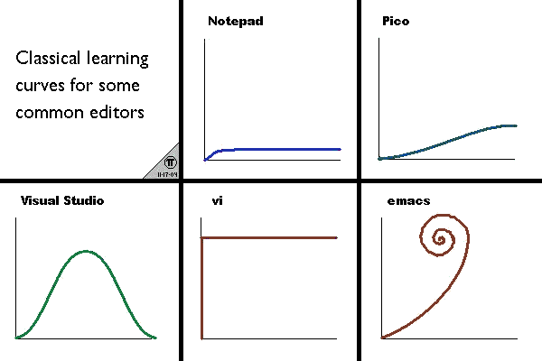
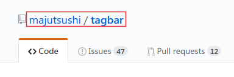
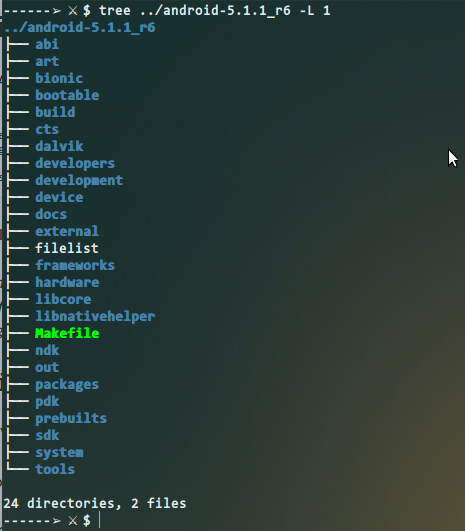
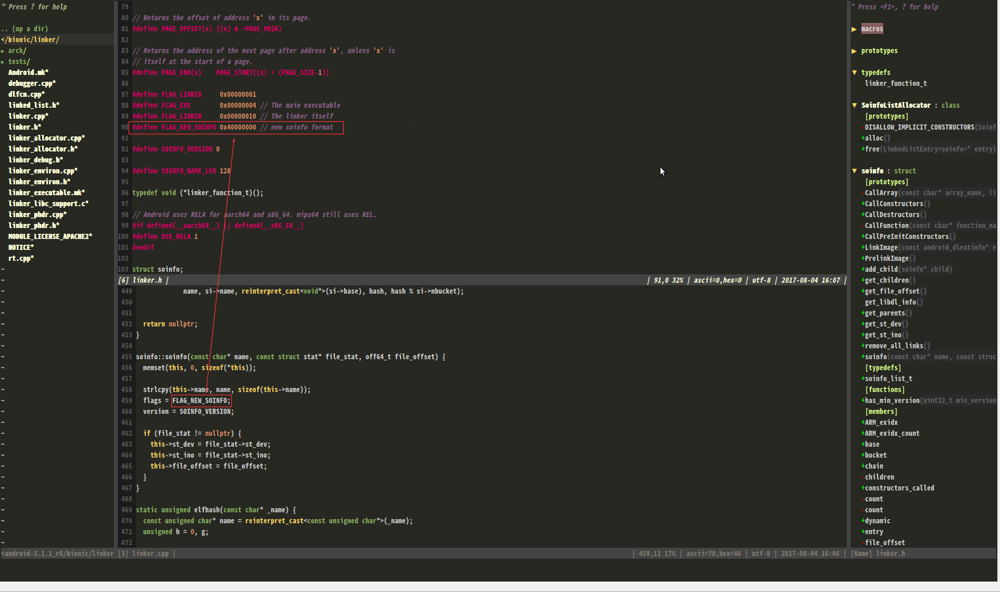
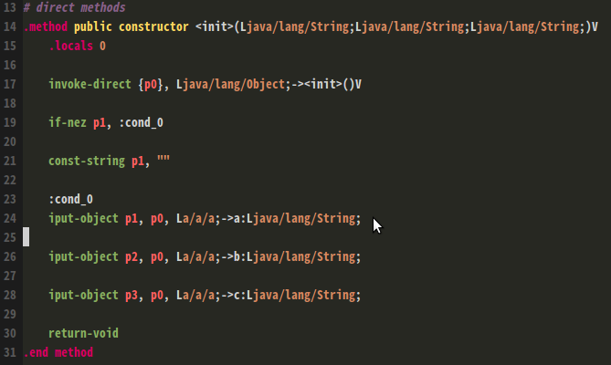

世界上有三种编辑器,第一种是神之编辑器 emacs,第二种是编辑器之神 vim,第三种是其他编辑器.
第一次接触 vim 应该是在 2014 年,当时我的主力系统还是 windows 7, 忘记了是什么缘故安装了 vim,尝试用了一下,太难用,还是回归我的 notepad++ 吧. 哈哈,当时 notepad++ 是我比较喜欢的一款开源编辑器.于是就此和 vim 擦肩而过, 此后大概整整有一年左右的时间,再未碰过它.现在想来,我为错过的这段时间感到遗憾.
大概 2015 年,开始转向 linux 平台,为了找到一款比较好用的文本编辑器,开始了寻找之旅, 再一次发现了 vim.下面是一张已经有了多年历史的图片,它阐述了不同编辑器的学习曲线:
上面这个学习曲线直观来看的话,我们一般都会认为横轴代表时间,纵轴代表难度. 直观来理解是可以的,VIM 曲线图上吐槽的就是初学入门门槛太高. 不过如果深究这个学习曲线,现在看来是无法解释的, 有人甚至写了篇文章论证这个东西. 文章写的还是挺搞笑,比如关于 Visual Studio 的一个笑话: you learn, become a master, then the next version comes out and you forget everything you once knew.
vim 的入门教程网上很多,此处不多说了, 我将从头一步步叙述如何从源码编译 vim 到配置一个还算不错的 编辑器之神 -- VIM.
以下操作是在一个全新安装的 Ubuntu 16.04 x64 上进行的.
如果你以前安装了 vim 请先卸载:
sudo apt-get remove vim vim-runtime gvim
Linux 下编译软件比较困难的地方在于如何正确安装编译所需的依赖项, 下面安装编译所需要的工具:
sudo apt install git
sudo git clone https://github.com/vim/vim.git
sudo apt-get install libncurses5-dev libgnome2-dev libgnomeui-dev \
libgtk2.0-dev libatk1.0-dev libbonoboui2-dev \
libcairo2-dev libx11-dev libxpm-dev libxt-dev python-dev \
python3-dev ruby-dev lua5.1 lua5.1-dev libperl-dev git
然后我们下载源码:
git clone https://github.com/vim/vim.git
接下来进入源码目录后,配置生成 makefile
./configure --with-features=huge \
--enable-multibyte \
--enable-rubyinterp=yes \
--enable-pythoninterp=yes \
--with-python-config-dir=/usr/lib/python2.7/config \
--enable-python3interp=yes \
--with-python3-config-dir=/usr/lib/python3.5/config \
--enable-perlinterp=yes \
--enable-luainterp=yes \
--enable-gui=gtk2 \
--enable-cscope \
--prefix=/usr/local
make VIMRUNTIMEDIR=/usr/local/share/vim/vim80
上面的配置中,启用了 python2 和 python3,但是使用 vim 时只能动态的使用一个版本的 python, 并且注意 python-config-dir 这个值,你可以使用下面的命令查看自己系统上安装的有哪些:
evil@shell:~$ ll /usr/lib/ | grep python drwxr-xr-x 27 root root 12288 Apr 15 01:56 python2.7/ drwxr-xr-x 3 root root 4096 Nov 10 2015 python3/ drwxr-xr-x 33 root root 4096 Feb 15 14:26 python3.5/
最后执行安装
sudo make isntall
我本来想用 checkinstall 生成一个 deb 包,结果发现生成的 deb 包安装后, 无法正确得到 gvim ,所以放弃了生成 deb 包.
你可以用下面的命令来确认成功安装了 vim 8.0:
vim --version
在 vim 中,我们使用 :help vimrc 可以看到 vim 配置文件的相关说明, 比如配置文件的位置和名称:
Unix $HOME/.vimrc or $HOME/.vim/vimrc MS-Windows $HOME/_vimrc, $HOME/vimfiles/vimrc or $VIM/_vimrc
vim 建议将所有的配置文件放到 $HOME/.vim/ 目录, (对于 Windows 则是 $HOME/vimfiles/). 因为这样的话,你可以很方便将自己的配置文件拷贝到另一个系统上去使用. 我个人的习惯呢,是新建一个 .vimrc 文件,将其放置到 $HOME/.vimrc. 但是你当然可以不这样,放到上面所描述的任何一个位置即可,但是要注意, vim 是按照上面的顺序依次寻找配置文件的,找到第一个后,后面的配置文件将会被忽略掉.
VIM 之所以强大,很大的一部分原因在于其可扩展性:插件. 我们要请的第一款插件是 Vundle,方便我们安装卸载插件.
git clone https://github.com/VundleVim/Vundle.vim.git ~/.vim/bundle/Vundle.vim
打开 .vimrc 文件,在该文件开始处加入下面配置:
set nocompatible
filetype off
set rtp+=~/.vim/bundle/Vundle.vim
call vundle#begin()
Plugin 'VundleVim/Vundle.vim'
Plugin 'tpope/vim-fugitive'
Plugin 'git://git.wincent.com/command-t.git'
Plugin 'rstacruz/sparkup', {'rtp': 'vim/'}
call vundle#end()
filetype plugin indent on
要安装的插件写到 vundle#begin() 和 vundle#end()之间, 一般插件的作者都会说明如何安装,特别的,对于 GitHub 上的,插件,比如说 tagbar 这个插件, 只要把它的仓库名称写入 Plugin 'REPONAME' 即可,如下所示: 
将图中红框里面的写在 Plugin 之后就可以了. Vundle 的一些命令如下:
// 列出已经安装的插件 :PluginList // 安装 vimrc 中配置插件 :PluginInstall // 更新插件 :PluginUpdate // 搜索插件 foo :PluginSearch foo // 卸载插件,先在 .vimrc 中删去声明的插件,然后执行下面的命令 :PluginClean
Vundle 会在 $HOME/.vim 下新建一个名字为 bundle 的目录,这个目录就是 bundle 的工作目录, 如果我们想手动安装插件,可以在 $HOME/.vim 下新建一个 plugin 目录,存放插件. 也可以在 $HOME/.vim 下新建一个 colors 目录,存放 vim 的颜色主题.
TODO
ctags 有两个类别:一个是 exuberant-ctags,一个是 universal-ctags, 这两个的区别是什么呢?后者由前者衍生而来,且前者已经停止维护了. 因此,我们使用 universal-ctags,编译改程序依赖 automake,需要先安装该工具, 安装好后编译方法如下:
git clone https://github.com/universal-ctags/ctags.git cd ctags/ ./autogen.sh ./configure --prefix=/usr/local/ --program-prefix=ex make && sudo make install
安装完成会在 /usr/local/bin 目录下生成 exctags 和 exreadtags 两个可执行文件. 现在让我们来使用 ctags,以 Android 源码为例,我们进入源码根目录,如下所示:
在源码根目录执行下面的命令:
exctags -R *
这样就在源码根目录下生成了一个名字为 tags 的文件,上面的 android 5 源码, 一共花费大约 10 分钟,tags 文件大小为 3984 M,约 4GB 的文件. 为了让 vim 能够找到这个 tags 文件,我们需要在 .vimrc 设置如下选项, 这个选项的设置来自知乎,地址在 这里:
set tags=./tags;,tags
这个是什么意思呢, tags 选项可以用逗号间隔多个值,每一个值指定要搜索的 tags 文件, 上面的第一个值 ./tags表示先在当前文件所在目录搜索名字为 tags 的文件, 然后一个分号 ;表示如果当前文件所在目录没有找到名字为 tags 的文件, 那么就继续向上找,直到根目录.接着的值 tags 表示在 vim 当前目录下找名字为 tags 的文件. 要注意,vim 中的当前目录不一定和当前文件所在目录一致,一般的当前目录是指 vim 第一次打开时所在的目录. 为了保证当前文件目录和当前目录一致,你可以在 vim 中加入以下选项来设置.
set autochdir au BufRead,BufNewFile,BufEnter * lcd %:p:h
通常地,能够从整体上预览一个源码文件有哪些函数,变量等是很方便的, 这个可以通过安装 tagbar 来解决.在 vim 中加入一下命令,然后使用 Vundle 来安装.
Plugin 'majutsushi/tagbar'
现在让我们打开 gvim,然后定位到某个源文件,比如说我打开: android-5.1.1_r6/bionic/linker/linker.cpp,如下图所示, 我想知道其中 FLAG_NEW_SOINFO 这个宏是在哪里定义的,我只需要移动到这个宏上, 然后按下 Ctrl+W+] ,稍等片刻(我等了大概 20 s,这个时间确实有点长,但是因为 android 源码比较大)就会定位到它的位置了. 然后就会在新的窗口中打开,如下所示:
上图左侧就是 NerdTree(:NERDTree),右侧是 Tagbar(:Tagbar). 常用的是 ctrl+] 在当前窗口打开光标下变量的定义处,ctrl+w+] 是划分一个窗口打开. 至于更多的可以查看帮助: :help 29.1
为什么要提这一款工具呢,因为它的效率相对要高一些,阅读一些大型源码, 可以更好的处理.下载地址在这里: https://www.gnu.org/software/global/download.html
tar -zxvf global-6.6.1.tar.gz cd global-6.6.1/ ./configure --with-universal-ctags=/usr/local/bin/exctags make && sudo make install
我们配置 global 以 exctags 为后端,这样可以支持更多的语言. 默认安装在 /usr/local/bin/ 目录下面,二进制文件会生成: gtags,htags,gtags-cscope 等文件.
下来看看怎么使用.首先请看看 /usr/local/share/gtags/FAQ 里面的常见问题, 里面有这么几条想在这里说一下:
举例来说,比如下面的这段代码:
#define M(a) static char *string = a;
M(a)
func() {
...
}
那么 global 将会跳过 func() 函数,为什么呢?因为 M(a) 看起来似乎是一个函数定义, 而这个函数定义末尾又不以分号结尾,如果它写成下面这样子,那么 global 将会正确识别:
#define M(a) static char *string = a;
M(a);
func() {
...
}
解决这个问题的方法是什么呢?你可以告诉 global 里面的 M 不是一个函数而是一个宏, 这个宏的名字可以写在项目根目录下名字为 .notfunction 的文件中,一个宏名单独占据一行.
如果你想要 global 视 .h 文件为 C++ 源文件,那么你可以定义环境变量 GTAGSFORCECPP, 使用命令 setenv GTAGSFORCECPP 或者 export GTAGSFORCECPP=.
现在我们来看看怎么用 global.进入到 Android 源码根目录,然后执行命令 gtags --gtagslabel ctags 即可. 在这个命令执行完后,将会源码根目录下生成三个文件: GTAGS(定义),GRTAGS(引用),GPATH(路径名). 这些文件一旦生成,在源码的任何目录下你都可以调用 global 来进行查询.生成的文件如下:
-rw-r--r-- 187M Aug 5 10:06 GPATH -rw-r--r-- 1483M Aug 5 10:06 GRTAGS -rw-r--r-- 1381M Aug 5 10:06 GTAGS
我们将其集成到 vim 中, global 源码中包含了最新版本的 vim 插件,主要有两个:
我们只需要将这个两个插件移动到 vim 的插件目录,在编译目录上执行下面的命令:
find . -name "*.vim" -exec mv {} $HOME/.vim/plugin \;
再配置一下 .vimrc :
"替换默认的 ctags 和 cscope,暂时不写入这些 "方便我们使用原有的 ctags ,若要使用 gtags 可以使用 :Gtags 相关命令 set cscopetag "set cscopeprg='gtags-cscope' "gtags 设置 let GtagsCscope_Auto_Load = 1 let CtagsCscope_Auto_Map = 1 let GtagsCscope_Quiet = 1
重新启动 vim 后,进入源码目录打开一个代码文件,光标移动到某个变量处, 输入 :Gtags 然后回车,global 将会自动补全光标所在处的变量名称, 再回车即可查询,速度很快,如果想看引用,则可以输入 :Gtags -r 然后执行类似的操作. 下面是一些其他常用的操作:
-a VAR: 显示绝度路径名称 -x VAR: 显示详细信息 -g PAT: 以模式 PAT 查询,比如 global -xg '#ifdef'
按照个人习惯,还是让 gtags 和 ctags 都生成一份, 然后想用那个用哪个. gtags-cscope 暂且不介绍,关于使用 vim 进行源代码阅读先说到这里.
latex 书写不方便的地方就是没办法实时预览, 程序员说要有光,于是便有了光.从此 latex 的各种实时预览插件涌现于互联网, 以前我会推荐 vim-latex-live-preview,但是现在不了.那有什么呢? vimtex.
在 vimrc 的 vundle 中配置如下:
Plugin 'lervag/vimtex'
安装方法就不说啦,前面已经提过了.这个插件的安装后,重启 vim,新建一个 latex 文件, 使用 \ll 来启用持续编译(也就是每次写文件便编译一次),使用 \lv 来预览, 使用 \lo 来打开日志窗口,使用 \li打开 tex 信息 窗口,按下 q 退出.vimtex 默认启用了 quickfix 错误窗口,这个设置可以在 vimrc 中进行关闭:
let g:vimtex_quickfix_enabled=0
除此之外,当 TEX 有多个文件时,我们需要指定一个主文件, 当编译中文时,需要用 xelatex 来完成我们的目标.
通过 :h vimtex可以得知, 在每个 TEX 的行首加入下面两行即可:
%! TEX program = xelatex %! TEX root = main.tex
除了上面在 TEX 文件中直接设置, vimtex 文档也提到了可以在 vimrc 中设置, 命令分别如下:
autocmd BufReadPre *.tex let b:vimtex_main = 'main.tex' let g:tex_flavor = 'xelatex'然而尴尬的是,我试了一下这种方式,行不通.....所以还是使用 %! 的方式.另外请注意,main.tex是你的主 TEX 文件.
在命令行模式下,通过 gvim 打开 tex 文件是没有任何问题的,而通过 vim 打开则有问题, 因为默认情况下, gvim 将会新建一个 clientserver ,而 vim 不会,所以需要通过明确指定, vim --servername VIM,另外我这里测试的时候, 发现通过鼠标右键选择gvim 打开时 vimtex 就不工作了. 这个问题目前还不知道如何解决,不过我现在几乎都是从命令行打开tex文件. 所以这个问题对我而言不能算是问题.
smali 是 java 源码反编译后的一种代码,不搞逆向的朋友可以就此跳过.
mkdir -p ~/.vim/plugin echo au BufRead,BufNewFile *.smali set filetype=smali >> ~/.vim/plugin/filetype.vim mkdir -p ~/.vim/syntax wget http://codetastrophe.com/smali.vim -O ~/.vim/syntax/smali.vim
此外确保 vimrc 文件中有如下配置:
filetype on filetype plugin on filetype indent on
效果如下所示:
在 vimrc 文件中加入如下代码进行安装:
Plugin 'SirVer/ultisnips' Plugin 'honza/vim-snippets'
配置 UltiSnips,可以在 vimrc 文件中加入如下选项:
" 触发配置,如果使用 ycm 则不要配置为 <tab> " 这里的 leader 为 '\',所以触发按键为 \i let g:UltiSnipsExpandTrigger="i" let g:UltiSnipsJumpForwardTrigger=" " let g:UltiSnipsJumpBackwardTrigger=" " " 使用 :UltiSnipsEdit 垂直划分窗口 let g:UltiSnipsEditSplit="horizontal"
可以看到上面安装了两个插件,第一个是 UltiSnips 这个是插件引擎, 第二个 vim-snippets 是代码块集合,里面定义了一些比较常用的代码块片段, 比如,date,datetime 等等.当然我们可以自己定义一些代码段, 我们在 ~/.vim 下新建一个 UltiSnips 文件夹,在这里面加入自己的代码段, mkdir -p ~/.vim/UltiSnips,这个文件夹会覆盖默认的设置. 这里说的覆盖意识是指,如果在 UltiSnips 下的代码段中定义的命令字段和 vim-snippets 中定义的有重复的, 那么将会选择我们自己书写的.否则 vim-snippets 中的还是生效的.每个代码段都是一个文件,格式为 NAME.snippets, 几种常见的 NAME 的如下:
c,c++,java,html,go,cs,css,tex,sh,r,php,python,matlab,markdown,lua,json,perl, ruby,tcl,xml基本上都是对应的语言名称.如果你想写一个通用的代码段,可以写到文件 all.snippets 中.现在, 我们来简单的编写一个 TEX 代码段(~/.vim/UltiSnips/tex.snippets):
snippet proof
\begin{proof}
$0
\end{proof}
endsnippet
格式实际上很简单, snippet 后面跟上你自己定义的文本字段,然后下面就是触发后写入的文本代码段,
最后一行以 endsnippet 结束,其中 $0 具有特殊含义,可以认为是代码段生成后光标落入的位置.
用法很简单,在一个 tex 文件中输入 proof,然后按下 \i 就会自动插入 proof 所定义的文本了,
而且光标会停留在 $0 处的位置.如果我们想编辑 tex.snippets 文件,当然单独打开 tex.snippets,
但是呢也可以通过命令 :UltiSnipsEdit tex 来打开.这个我们在前面设置过了.
现在来简单的说一下 UltiSnips 的书写语法. Snip 中有规定了几个停靠位置, $1,$2,...,$n 是一个有序的停靠位置序列,此处称之为停靠符,$0 具有特殊含义, 因为无论多少个停靠符光标最终都将停在 $0 处.我们可以使用停靠符来预定义一些文字说明, 比如 ${1:插入标题},也可以执行一些 shell 命令,比如 ${2:`date`}.我们在一个段落里还可以引用其他停靠符的内容. 比如 ${1:插入标题},当我们按下 \i 触发 UltiSnips 之后,UltiSnips 将会选中 $1 处的 "插入 标题",我们可以输入标题,如果代码段其他地方有引用 $1 的地方, 那么 UltiSnips 会自动将引用的这些地方变为我们输入的标题,然后按下 ctrl+j 就会调到 $2 处, 等待我们输入,依次类推,直到$0 处. 更多帮助,请看 :h UltiSnips
TODO
TODO
TODO
TODO
TODO
TODO
TODO
TODO
TODO